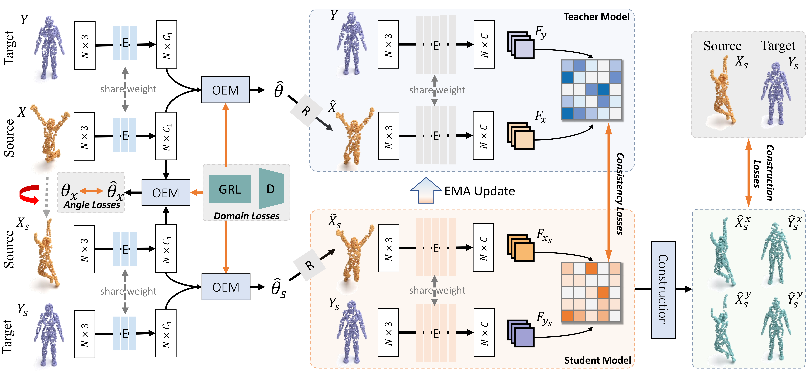
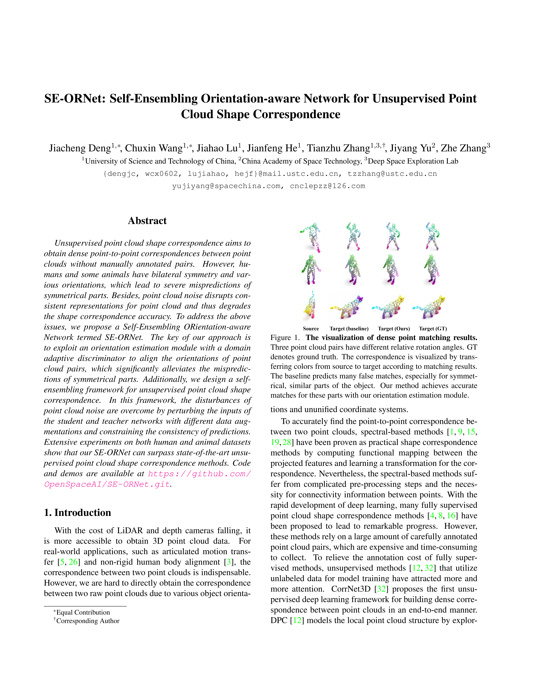

Jiacheng Deng1* ChuXin Wang1* Jiahao Lu1 Jianfeng He1 Tianzhu Zhang1,3 Jiyang Yu2 Zhe Zhang3
1University of Science and Technology of China 2China Academy of Space Technology
3Deep Space
Exploration Lab
*Equal contribution
Unsupervised point cloud shape correspondence aims to obtain dense point-to-point correspondences between point clouds without manually annotated pairs. However, humans and some animals have bilateral symmetry and various orientations, which lead to severe mispredictions of symmetrical parts. Besides, point cloud noise disrupts consistent representations for point cloud and thus degrades the shape correspondence accuracy. To address the above issues, we propose a Self-Ensembling ORientation-aware Network termed SE-ORNet. The key of our approach is to exploit an orientation estimation module with a domain adaptive discriminator to align the orientations of point cloud pairs, which significantly alleviates the mispredictions of symmetrical parts. Additionally, we design a selfensembling framework for unsupervised point cloud shape correspondence. In this framework, the disturbances of point cloud noise are overcome by perturbing the inputs of the student and teacher networks with different data augmentations and constraining the consistency of predictions. Extensive experiments on both human and animal datasets show that our SE-ORNet can surpass state-of-the-art unsupervised point cloud shape correspondence methods.

The overview of our self-ensembling orientation-aware network for unsupervised point cloud shape correspondence. Xs is generated from the raw source point cloud X by random rotation and Gaussian noise, while Ys is only augmented by Gaussian noise. We design the Orientation Estimation Module to estimate the rotation θ of the source with respect to the target and align the point cloud in position space. Afterward, the aligned point cloud pairs are input to the teacher and student models, respectively, and the correspondence is predicted through a DGCNN backbone. Finally, we supervise the student model by the consistency losses and the construction losses, and the teacher model updates the parameters using the exponential moving average (EMA) strategy. The gradient reversal layer (GRL) acts as the identity function during forward propagation, but is multiplied by -1 during backward propagation.
Visual Comparison on SHREC’19 test set.

Visual Comparison on TOSCA test set.
|

|
Last update: Mar, 2021